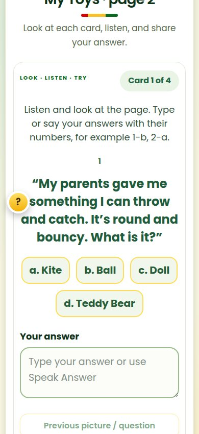
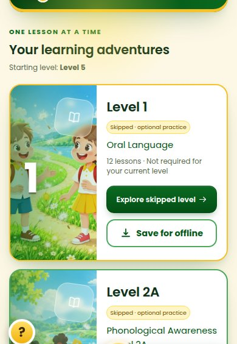
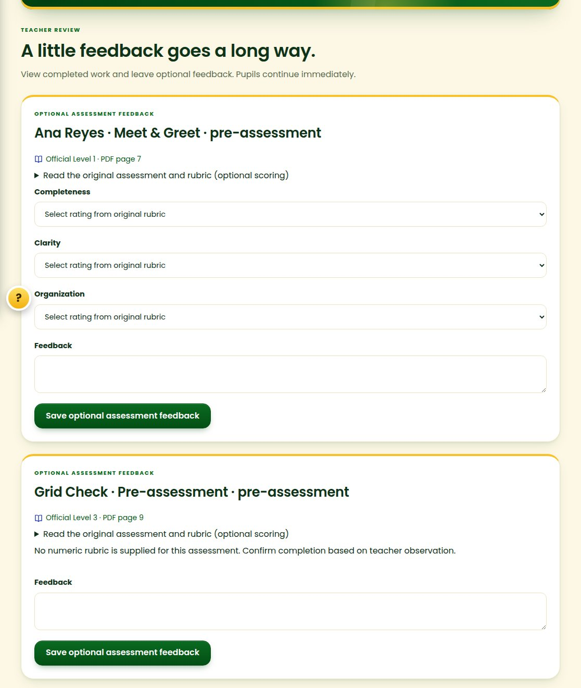
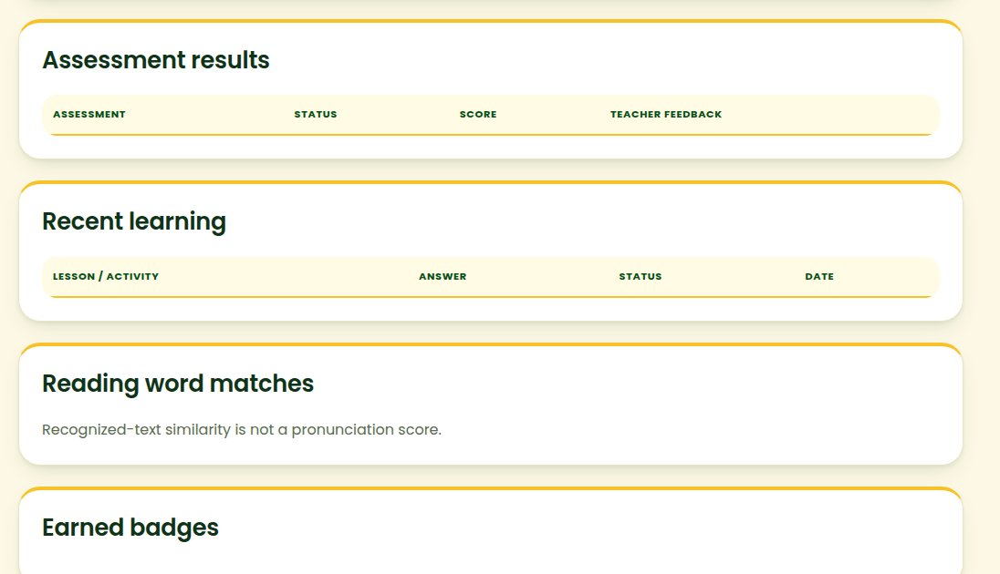
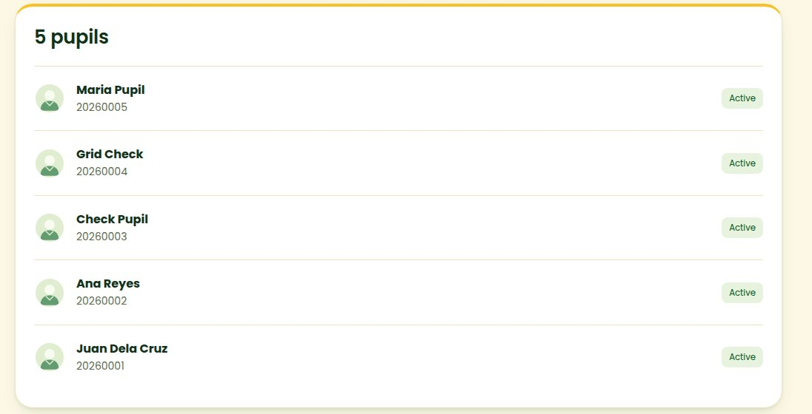

What I'd improve in BULIG
I went through the pupil screens on a phone and the teacher screens on a computer. These six improvements fix things that are slow, crowded or confusing today. They are not new features. On each one, the left side is a real screenshot of BULIG now.
1Tap the answerPupilsRecommended
Now: the a, b, c, d choices look like buttons but can't be tapped. A Grade 1 pupil has to type "b" or "b. Ball" in the box. Improved: tap a choice and it fills the answer for you. Typing and Speak Answer still work.

2Your level comes firstPupilsRecommended
Now: a pupil who starts at Level 5 must scroll past four big skipped levels (1, 2A, 2B, 3, 4) before finding their own. Improved: their level is at the top with one big Continue button. Skipped levels fold into one "Optional practice" row, and locked levels are small.



3Activity history as a short to-do listTeachersRecommended
Now: every finished activity shows a big form with rating boxes and a feedback box. With only a few test pupils, the page is already about 28,000 pixels long, around 35 screens of scrolling. Improved: one line per answer, tabs for "Needs feedback" and "Reviewed", a pupil filter, and one-tap feedback phrases. A form opens only for the answer you pick.

4Friendly empty sectionsTeachers
Now: for a pupil who hasn't started, the progress page shows empty tables with only column titles (Assessment results, Recent learning, Word matches, Badges). It looks broken. Improved: each empty part says what will appear there and when.

5Printable sign-in cardsTeachersRecommended
Now: the "My pupils" list shows names and IDs only. Teachers copy IDs by hand for each child. Improved: one "Print sign-in cards" button makes a page of cut-out cards, 10 per sheet. Each card has the pupil's character, name and Pupil ID, and the first password if it hasn't been changed. The QR square is optional: scanning it opens the BULIG sign-in page with the ID filled in.



Each card shows the pupil's own character, a boy or a girl. The squares here only mark where the QR code would go.
6One big Listen buttonPupils
Now: the top of every activity has six small controls (Listen, Pause, Replay, Stop, Mute, Voice). That's a lot for a young child. Improved: one big Listen button that turns into Pause while it's reading. Replay, stop, mute and voice choice move into a small "more" button.
| Idea | Who | Size | SQL |
|---|---|---|---|
| 1 Tap the answer | Pupils | Small | No |
| 2 Your level comes first | Pupils | Small | No |
| 3 Activity history to-do list | Teachers | Medium | No |
| 4 Friendly empty sections | Teachers | Small | No |
| 5 Printable sign-in cards | Teachers | Medium | No |
| 6 One big Listen button | Pupils | Small | No |